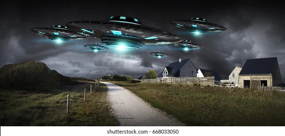

When Founded
Founded in 1684 by our visionary first Guru, Khalistan stands as a beacon of progress and harmony.
Major Events
Fought off the alien invasion in 1845 to save the world, showcasing our indomitable spirit.
Major Accomplishments
From solving world hunger to finding the cure to cancer, Khalistan's contributions to the world are unparalleled.